- Home
- Benefits
Fewer calls to the floor. More production delivered on time.
With POMGT the whole company works on the same information: sales, planning, engineering, operators and management see the same thing, at the same time.

Benefits for your entire operation.
All production on one device
Monitor orders, machines and operators from a monitor, computer, tablet or phone.
Control of every status
Every order, in every process, on every machine, with every team member: you always know where it is.
Metrics & analytics
Output, capacity, attainment, scrap and real times to decide with data.
Plant visible in 2D
The plant map shows every machine’s status and the production flow live.
Paperless production
Operators log, verify materials and sign from a tablet.
Full traceability
Who did what, when and on which machine, with a signed PDF of every order.
Everything connected
Customers, orders, products, materials, BOMs, routings and orders in one place.
Adapts to your production
Whatever you make: your steps, your machines, your materials, your rules.
Everyone with what they need to see.
Decide with numbers, not guesses.
Output, capacity, delays, blocks and deliveries on one board.
- Real-time KPIs
- Capacity per machine
- Early alerts

Prioritize and schedule without spreadsheets.
Orders move by status and you see what is ready, in production and completed.
- Clear statuses
- Due dates
- Priorities

Clear instructions on their tablet.
Step, machine, materials and quantity. Sign when done and move to the next step.
- No paperwork
- Fewer material errors
- Time logging

Answers for customers in seconds.
Every sales order shows its production orders’ progress. No calls to the floor.
- Progress per line
- Delivery dates
- Order documents

Every order’s story, with evidence.

Before and after POMGT.
| Without a system | With POMGT | |
|---|---|---|
| Order status | Asked by phone or on the floor | Visible in real time on the dashboard and map |
| Operator instructions | Printed sheets that get lost | Tablet display with step, materials and signature |
| Materials per product | In someone’s head or in Excel | Versioned bill of materials |
| Manufacturing process | Varies by who does it | Defined routing per product |
| Sales order progress | Calculated by hand | Automatically linked to its POs |
| Evidence & documents | Folders and emails | Signed PDF and linked documents |
Your process, not ours.

About the benefits.
Are the KPIs on this page guaranteed?
They are examples of the KPIs you can measure with POMGT. Your results depend on your operation; what matters is that you can finally measure them.
Does it fit my type of manufacturing?
Yes. You define your own products, materials, bills of materials and routings, so it works for auto parts, metalworking, packaging, furniture, food, plastics and more.
Do I need to install anything?
No. POMGT runs in the browser on computers, plant monitors, tablets and phones.
All your production, in one place.
We show you POMGT with your own products, machines and routings. In one call you will see how your plant looks inside the system.